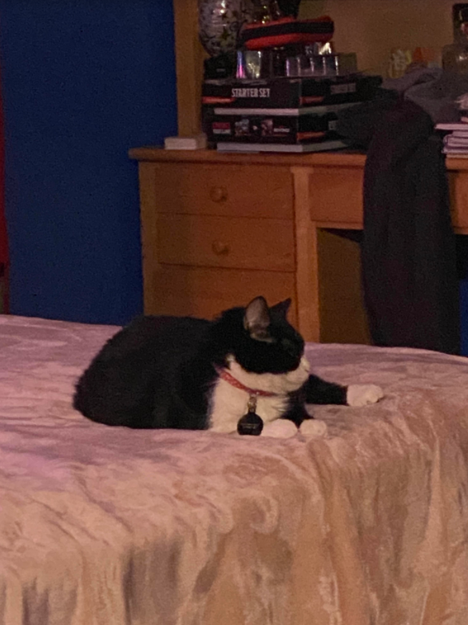
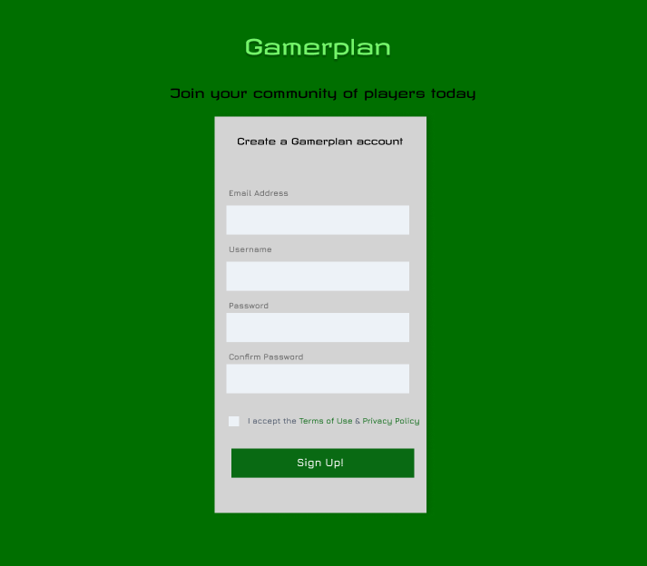

This is my girlfriend's super amazing cat named Minako. Below is an image of Minako sitting on my bed like the exotic, mysterious creature she is. Minako does not always behave as a traditional pet should; she has hissed at and attacked countless objects in my house including paper airplanes, a ripstick and my clarinet all within the span of a few months. I've heard that tuxedo cats have a tendency to be a bit on the strange side but Minako effortlessly continues to surpass my expectations on how silly a cat can be. My girlfriend, Rachel, and I got Minako a little over a year ago. I was a little skeptical about getting a cat, considering that Rachel is mildly allergic and that we both have never had a pet cat before. Despite my concerns, I have absolutely enjoyed every moment that I have spent with Minako so far and I cannot wait to see what nefarious schemes she may have planned for in the future. As a bonus, here is a table demonstrating some of Minako's characteristics:
| Likes | Dislikes | Neutral Towards |
|---|---|---|
| Sitting on other people's personal items | Not being fed on time | Being petted |
| Hissing at inanimate objects | Loud noises | Human Food |
| Humans | Dogs | Other Cats |

For my second post, I decided to take some time to discuss an idea for what I would like my final project to be if we are asked to make a website. I'm not entirely sure how practical a website like "Gamerplan" would actually be since it is a very ambituous prospect. The idea of creating a platform that combines the functions of several different applications including discord and metafy so that users only need to go to one place to get the whole package seems like a no-brainer at first and that something like this should already exist. However, this mindset clearly does not consider why something like this doesn't exist: if it were possible / practical, it would already be done. Despite all of this, I think that creating a website that is at least functional and keeps the vision of what "Gamerplan" could be sounds like fun and I would love to give it my best shot!
